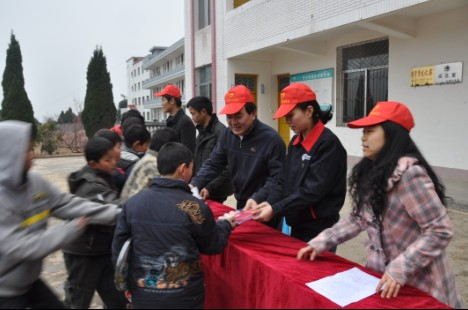
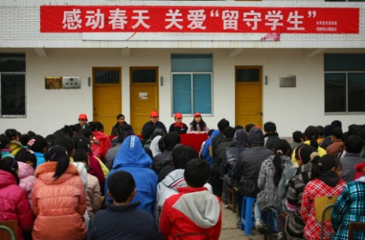
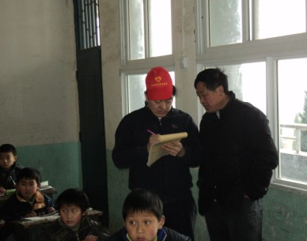
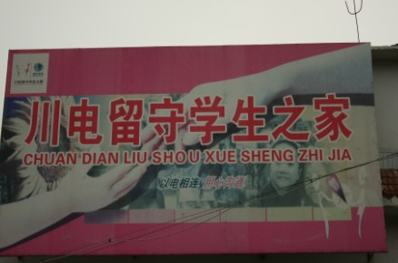
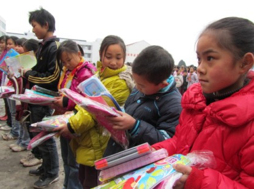
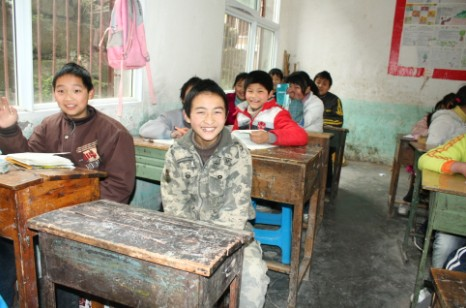
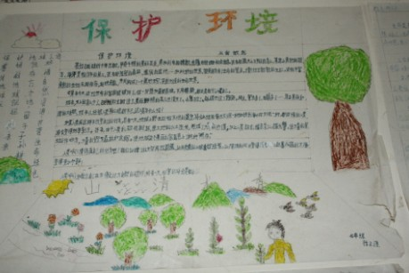
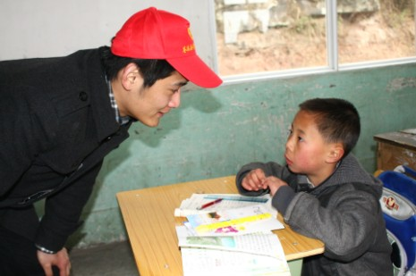
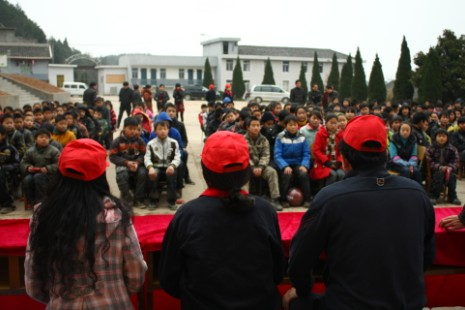
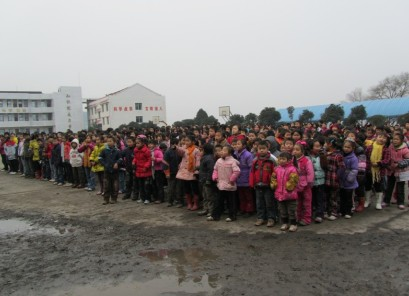

团苍溪县委积极开展“十个一”关爱“留守儿童”志愿服务活动
桂电志愿者网 日期：2011-11-23 来源：中国志愿者网

“小红帽”无处不在

感动春天

爱心调研

爱心家园

爱心捐赠

灿烂笑容

低碳教育

课业辅导

理想教育

励志教育
2011年，是全面实施“十二五”规划和新一轮西部大开发的开局之年。为团结带领苍溪青年积极投身“十二五”规划和将广元建设成川陕甘三省结合部经济文化生态强市贡献青春力量，在举世瞩目的全国“两会”隆重召开和第12个中国青年志愿者服务日之际，团苍溪县委号召广大青年在全县范围内积极开展了“十个一”关爱留守儿童志愿服务活动。
“十个一”关爱“留守儿童”志愿服务活动包括开展一次周末辅导（知识援助、携手成长）、连线一次亲情电话（亲情陪伴、传递爱心）、捐赠一批爱心物资（慷慨解囊、给力成长）、结对一批帮扶对象（深化结对、心手相携）、开展一次走访调研（感受生活、见证成长）、倾听一次儿童心声（心灵驿站、问寒嘘暖）、齐唱一首爱国歌曲（思想引领、激扬情怀）、争做一次爱心大使（天使有形、大爱无言）、建设一批留守家园（持续呵护、温馨家园）、唤起一种关爱情怀（宣讲政策、共铸未来）等内容。
苍山映春晖、溪水育真情。在“十个一”关爱“留守儿童”志愿服务行动的倡导下，广大青年、志愿者和青年组织积极响应号召，躬身志愿行动，在县属部门、城区学校、企业单位、乡镇街道等单位部门和广大青年中掀起了“十个一”关爱“留守儿童”的热潮。活动中，广大青年传递温暖、奉献爱心，呵护成长、携手未来，让同一片蓝天下的孩子们共享人间温情、齐唱未来赞歌！
来源：中国志愿者网
【责任编辑：何欣】